目前，由于人们缺乏森林可持续管理的知识，狩猎、非法砍伐和大规模的森林开发的情况盛行，这导致了大量具有高保护价值的森林受到破坏，人与野生动物之间的冲突越发严重。
因此，我们决定和村民们一起建立一个既能保护森林又能给社区带来经济收入的互利系统。
我们的目标是在当地自然文化基础上建立一个生态村。在未来，这个村庄的可持续性发展理念将使人们能够与森林以及野生动物和谐相处。虽然环保工作需要付出社会经济成本，但我们相信，长期来看，环保理念可以为大自然带来更好且有价值的影响。
为了实现这一目标，我们采用农林复合经营（Agroforestry）的理念，以帮助森林生态的恢复。一方面，村民们可以在混农林中种植具有长期经济价值的果树，另一方面，村民们也可以在他们的自有土地上种植蔬菜、稻米等具有短期经济价值的农作物，供日常生活所需。
长此以往，被破坏的森林和土地将逐渐恢复，并为社区带来可持续的经济收入。
同时，我们也将在Merasa村建立一个生态基地和教育中心。该中心包括一个培育树苗的苗圃，一个让学生在其中学习的森林生态教育中心，以及志愿者宿舍（志愿者可以前来植树和参与其他环保活动）。


温室气体是全球变暖和气候变化的主要原因，而树木对于减少温室气体具有非常重要的作用。树木就像海绵一样，吸收了人类和其他生物活动所产生的二氧化碳。而当积木成林，这一效果则更为强大。
印度尼西亚是一个非常幸运的国家，因为我们拥有大片的热带雨林。然而，不幸的是，由于非法砍伐、森林开发、土地占用等原因，印尼的森林面积锐减，森林退化严重，这是违背可持续性原则的。 森林受到严重破坏，也就不能像往常一样很好地吸收温室气体了。
森林的退化，以及越来越多污染物的产生和排放，这使得大气层的热量不断堆积，气候变化加剧。对此，印尼政府正在采取行动，鼓励印尼人民通过植树来解决这一问题。
2008年，印尼总统发布了“第24号总统令”，将11月28日定为印度尼西亚植树日并且规定当天每个印度尼西亚社区至少种植一棵树。
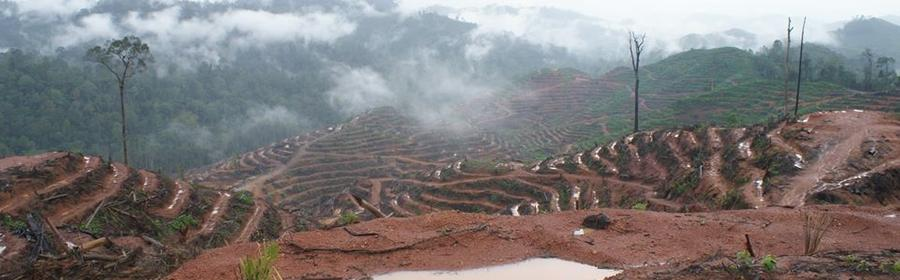
印度尼西亚东加里曼丹省贝劳市Kelay区Merapun村附近的森林，原本是红毛猩猩的栖息地（依据：印尼红毛猩猩论坛发布的红毛猩猩数量和栖息地生存能力评估数据和地图）。 但现在，这里变成了PT. Global Primatama Mandiri公司（PT.GPM，隶属于Palma Serasih集团）的棕榈种植园。日前，该公司正在清理这片森林。
事实上，该公司自2017年以来一直在进行森林砍伐和土地清理工作。他们被允许在离Lesan河森林保护区不远的地方进行森林开发。基于2014年PT Berau Regent第343号法令，PM GPM进一步扩大了油棕种植园的范围，面积达7400公顷。
除了PT.GPM以外，Palma Serasih集团还拥有另外11家经营棕榈油的子公司。该集团在印度尼西亚证券交易所（IDX）上市， 持有PT Jalinankasih sesama 41.38%、PT Serasih Holdico 35.01%、Budiono TanBUN 8.49%、DBS Bank Ltd SG 5，31%、Society 9.81%、Budiono TanbunDireksi 8.49%的股份。
不幸的是，印尼环境与林业署给该公司颁发了森林开发的执照，允许该企业砍伐本应是红毛猩猩家园的森林。这极大阻碍了保护野生红毛猩猩的进程。由于适宜红毛猩猩居住的森林在不断锐减， 数千只本应返回森林的红毛猩猩被迫呆在救助中心，这也导致了更多的人兽冲突问题。
印度尼西亚东加里曼丹省贝劳市Kelay区Merapun村附近的森林，原本是红毛猩猩的栖息地（依据：印尼红毛猩猩论坛发布的红毛猩猩数量和栖息地生存能力评估数据和地图）。 但现在，这里变成了PT. Global Primatama Mandiri公司（PT.GPM，隶属于Palma Serasih集团）的棕榈种植园。日前，该公司正在清理这片森林。
事实上，该公司自2017年以来一直在进行森林砍伐和土地清理工作。他们被允许在离Lesan河森林保护区不远的地方进行森林开发。基于2014年PT Berau Regent第343号法令，PM GPM进一步扩大了油棕种植园的范围，面积达7400公顷。
除了PT.GPM以外，Palma Serasih集团还拥有另外11家经营棕榈油的子公司。该集团在印度尼西亚证券交易所（IDX）上市， 持有PT Jalinankasih sesama 41.38%、PT Serasih Holdico 35.01%、Budiono TanBUN 8.49%、DBS Bank Ltd SG 5，31%、Society 9.81%、Budiono TanbunDireksi 8.49%的股份。
不幸的是，印尼环境与林业署给该公司颁发了森林开发的执照，允许该企业砍伐本应是红毛猩猩家园的森林。这极大阻碍了保护野生红毛猩猩的进程。由于适宜红毛猩猩居住的森林在不断锐减， 数千只本应返回森林的红毛猩猩被迫呆在救助中心，这也导致了更多的人兽冲突问题。


在婆罗洲，棕榈种植和煤炭开采是森林的最大的“杀手”。对于这两种情况，唯有通过抗议才能迫使这些公司停止毁林。而在抗议之后，我们还需要建立一个保护区来保护森林、当地社区和野生动物。
因为森林砍伐，许多野生动物失去了家园，而因栖息地丧失导致的人兽冲突最终也往往以野生动物的死亡收场。事实上，森林砍伐不仅会影响到野生动物，也影响到森林周围的居民以及世界的人们。 因为森林砍伐会导致全球变暖，而洪水、山体滑坡和火灾等自然灾害也都证明了毁林的严重性。
如果没有人阻止这些公司毁林并迫使它们关注森林保护，这些公司将继续以经济发展的名义来破坏森林。
2020年，婆罗洲保护行动成立了一个减灾救援队，旨在救助那些在森林砍伐引起的生态灾难中需要帮助的人和动物。这个团队的任务是定位森林砍伐的位置，描绘潜在冲突，并在火灾、山体滑坡、洪水等自然灾害中救助受灾民众和动物。
让我们和减灾救援队一起，为应对每一次生态灾难做好准备吧！
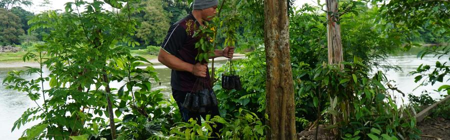
婆罗洲保护行动团队在此感谢您在2019年为我们提供的帮助。在您的帮助下，我们恢复了大片的曾被破坏或焚毁的森林，种植了数千棵树苗，救助了成千上万的野生动物。
这封感谢信来自婆罗洲热带雨林深处的Merasa村。无论您现在身处何方，我们希望您都可以收到我们的感谢邮件。
在2019年，长达5个月的旱季改变了森林中的许多事情。2019年对于我们而言是极为艰难的一年。但是在您的持续帮助下，我们克服了种种困难，最终走过了2019年。
祝您一切安好！
婆罗洲保护行动全体工作人员 敬上
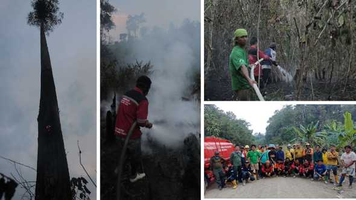
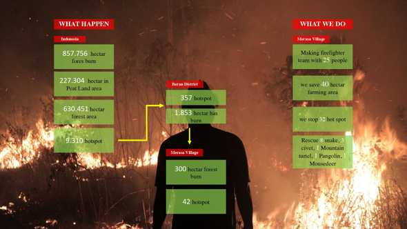
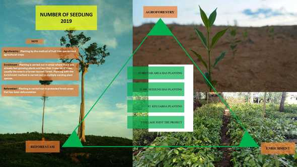
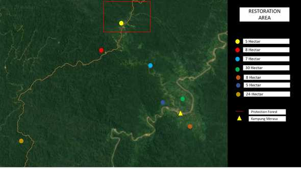
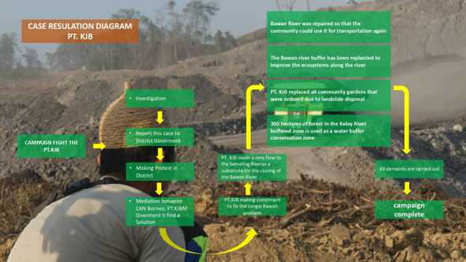
婆罗洲保护行动团队在此感谢您在2019年为我们提供的帮助。在您的帮助下，我们恢复了大片的曾被破坏或焚毁的森林，种植了数千棵树苗，救助了成千上万的野生动物。
这封感谢信来自婆罗洲热带雨林深处的Merasa村。无论您现在身处何方，我们希望您都可以收到我们的感谢邮件。
在2019年，长达5个月的旱季改变了森林中的许多事情。2019年对于我们而言是极为艰难的一年。但是在您的持续帮助下，我们克服了种种困难，最终走过了2019年。
祝您一切安好！
婆罗洲保护行动全体工作人员 敬上
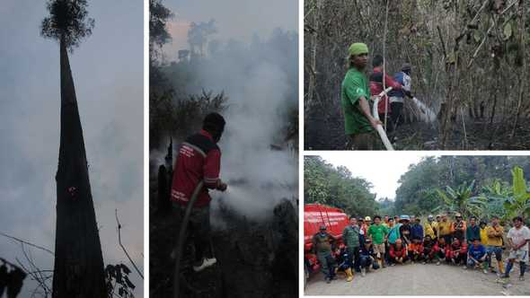
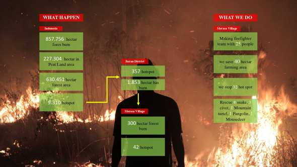
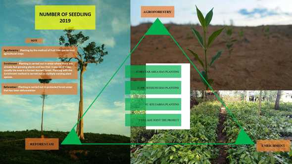
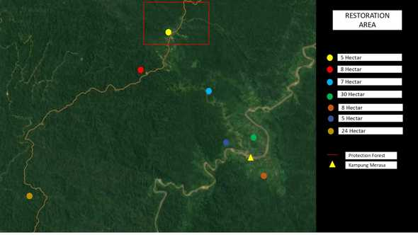
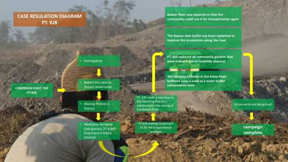


雨来了，把之前烧过的所有森林都浸透了。现在，最后一个着火点被扑灭了，这是与东婆罗洲大火的斗争的终点。对于团队和所有的野生动物来说，今天是快乐的一天。 让我们再次重建所有已经燃烧的森林，这是我们对大自然母亲的承诺。我们非常感谢您们向我们提供的所有的捐款。您们的支持让我们在与大火的战斗中更加强大。我们不能一一列举您们的名字，因为好心人的名字实在是太多了。
请将此故事分享给您全世界的朋友。我们在婆罗洲感谢您的善意！


我们和村民联合起来尽全力阻止大火已经两周了。在Merasa村庄有8个着火点，有100多人参加这场拯救森林的战斗。明天还有很多着火点和大火需要被扑灭。 今晚，我们仍在靠近农场附近和森林的地点等待大火，以确保大火不会在每个人睡觉时将其全部点燃。

此刻，大火在Merasa村庄周围蔓延。Merasa村庄是许多达雅克家庭的家园，也是我们的基地。在Merasa村庄的婆罗洲保护行动团队和消防员们需要您的帮助，来购买更多的汽油，更多的消防背包，软管，食品，口罩和基本的消防设备。
播放视频

因为电脑的数量的不足，孩子们只能分为被4组，这台二手电脑是村里一些关心孩子教育的好心人捐赠的。 在这里，孩子们学习最基本的电脑知识，因为他们完全没有接触过这些。我们正在寻找可以帮助我们教孩子的志愿者。如果你想要捐赠，请发邮件 infocanborneo@gmail.com 或如果你有闲置的二手电脑，请发送到印尼东加里曼丹的Merasa村。

达雅族是一支来自中国大夏族的部落，现主要分布在婆罗洲，这支部落在很久之前和泰雅族、赛雅族一起南迁到台湾、印度尼西亚、文莱、马来西亚等地。这里有很多特别有趣的传统文化，包括传统纹身、长耳垂、服饰、舞蹈和音乐。

达雅族历史的追溯
达雅族的传统文化从中国发源，但是由于时间、战争、以及部落迁移的原因，许多传统的达雅族习俗已经被改变，甚至永远被遗忘在了历史中。
达雅族和泰雅族的祖先都是大夏族，在这两个部落里有许多相似的习俗和文化。两个部落都信奉着一种鸟类，他们相信这种鸟能给他们带来好运，是智慧的象征。 他们都相信经过一种特殊的仪式（达雅族是在木屋中进行的仪式，泰雅族是彩虹桥），他们能够到达和见到他们所崇拜的地方和人。 这两个民族同样都有纹身的文化，在泰雅族，女性在结婚之前一定要纹身；在达雅族，男性在结婚前也会在后背纹身。从这里，我们看出达雅族和中国还是有着丝丝缕缕，不可切割的联系。
二十世纪是一个多难的世纪，印度尼西亚发生了许多战争和侵略。不幸始于1777年，荷兰的入侵带来了外来宗教，他们散播宗教迫使人们放弃了自己的传统信仰和文化，因为本地一些传统文化在外来宗教里是不被允许的，例如长耳垂，达雅独特纹身。 同时也一直因为政府边缘化加里曼丹岛及其文化，在往后的两百年内，本地传统文化从每一代人手中不断流失。尽管当地部落的文化长老也曾想再次复兴这些传统的属于达雅族的文化， 他说，现在的人们已经习惯了这现代化的生活，他们不敢再去尝试那些传统的东西，以至于那些传统文化如纹身现在已经变成了一种符号。
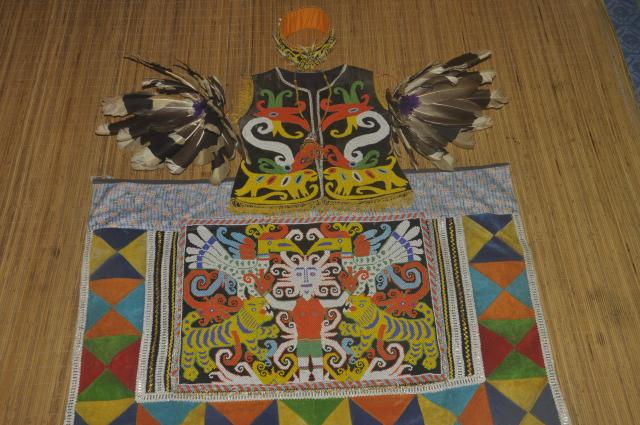
在达雅族，传统纹身代表着重要意义，并传递出相关信息，如是否结婚、是否足够勇敢以及在部落里的社会地位，所以每个传统的达雅族人都拥有自己的纹身。达雅族人一般会在14-15岁时开始纹身。 达雅族纹身的颜色是蓝黑色的，如果身上有带有颜色的纹身，那并不属于达雅族的传统纹身，他们通常会在举行祭祀仪式的时候洗去。取得族长的许可，举行祭祀仪式之后，便可以请当地有名望的纹身师开始纹身了。 从埋线到绘制，这个过程非常漫长，部分纹身通常会花费一个月的时间，如果绘制全身，甚至会花近半年到一年。
达雅族纹身中，不同的图案象征着不同的意义。普通达雅人都会将盔犀鸟、老虎和龙（蛇）作为纹身的图案，老虎、龙（蛇）是勇敢和权利的象征，而盔犀鸟在达雅人中心是自由的象征。 盔犀鸟对于达雅族最为特殊，在人们还没有猎捕盔犀鸟前，婆罗洲曾是盔犀鸟的天堂。盔犀鸟飞得比一般的鸟高和远，所以人们把它作为自由的象征。在达雅族传统民居里可以发现许多有盔犀鸟元素的服饰、装饰品甚至是舞蹈和音乐。
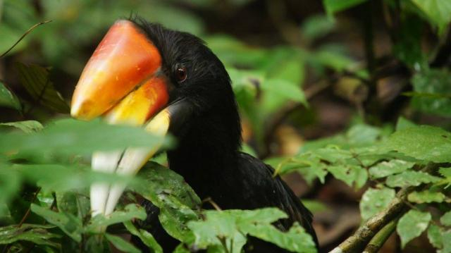
当地达雅人会十分乐意告诉你关于纹身的含义，但是只限于普通没有特殊意义的纹身。如果问起一些有特殊意义的如只有王室的人才可以纹的纹身，他们一般不会告诉你，因为普通的达雅人并不知道。 这种特殊的纹身所蕴含的意义，王室成员只会告诉自己的亲人。最为鲜为人知的两个图案分别是男性王室成员身上的茄子花和女性王室成员身上的达雅族女性头像。
从普通的老百姓到大臣和王室成员，不同社会阶级的达雅人纹身的部位都是不同的。对于男性来说，他们主要在这4个部位纹身，分别是左右胳膊和前后颈。一般纹的是花，这种叫Bunga Terong的花在中文里是茄子花的意思。 一般男性都先从右边开始纹，纹身数量越多代表他的等级越高。但是只有国王才会拥有四朵完整的花，因为只有国王才可以在后颈纹身。对于女性来说，也同样是这四个部位，左右臂膀和前后颈。 在地位等级高的女性身上，人们可以看到达雅族女性的头像。
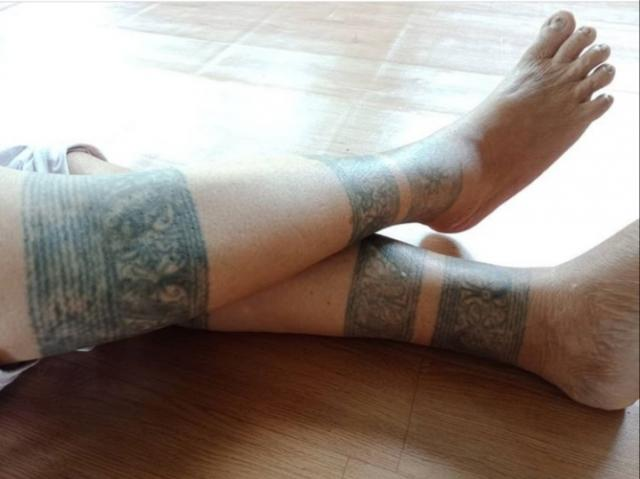
Merasa村庄一位老人的纹身，她不是王室的人
在每一个部落里都会有王室的人，对于这些王室的人也会有一些特殊的规定和要求，如果有人违反了还是会受到惩罚的。如果男女双方都是王室，他们所生的小孩不管是男还是女都有权力去绘制专属王室的纹身， 男生可以绘制那四个特殊的部位并带有茄子花，女生可以在脚上或手上绘制达雅族女性的头像。但是如果有一方不是王室，那么他们的子女都不可以做以上的绘制。但这样的社会阶级并不是不可打破的， 如果男性为部落做出了杰出贡献，如他们带领了族人们迁移到一个新的更有助于他们生存和发展的地方，那他就有资格去绘制茄子花。
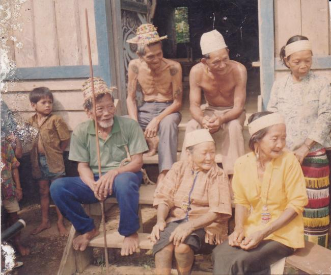
但可惜的是，在我前不久前往调研的东加里曼丹岛Merasa村庄，已经很少有人拥有传统的达雅族纹身，更别说王室纹身。村里的老人说，这个传统在1973年外国入侵的时候就已经消失了。
传统文化为何丢失？
Merasa村庄生态旅游项目工作人员Linus说，文化逐渐改变，很多达雅年轻人不再想拥有纹身，因为他们不想与别人不一样。当地的小学老师Uci告诉我，政府为了执行禁止纹身的政策，甚至禁止有纹身的小孩上学。受到政府的影响，达雅人逐渐开始穿长衣长裤，遮盖他们的纹身印记。
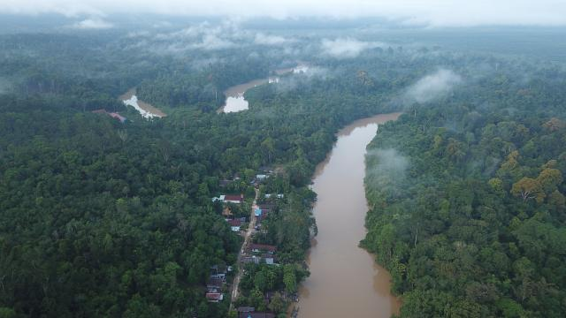
Uci外婆是村里为数不多还记得那段历史的老人，她的丈夫是当时王室的成员，也是一名纹身师。但当我见到Uci外婆的时候，她也穿着长衣长裤遮盖着腿上和手臂上的纹身，并且刻意回避我关于传统纹身的话题。Uci说，之前外婆十分愿意向别人展示自己的纹身， 但是现在她搬到了更繁华的县城里，于是她穿起长衣和长裤遮住了自己的纹身，因为她害怕纹身显露出来后，别人会用另类的眼光去看她。 在社会的压力下，她说服自己，拥有那些传统文化并不是一件值得骄傲的事情，现在的人们也不会理解传统文化。于是，她把自己身上独有的符号掩盖了起来，淹没在了人群里。
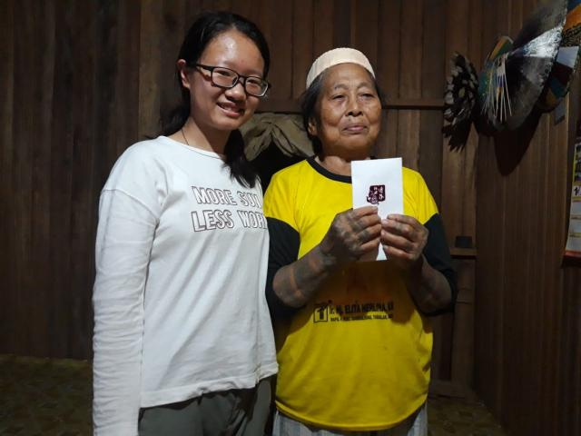
纹身是达雅族的文化象征，还有更多的文化随着社会的发展消失在历史的长河里。当我问起村庄里唯一一所中学的学生关于传统文化的内容时，孩子们茫然地看着我，仿佛这些文化和历史不曾出现在他们的村庄里。 当初带着第一批村民迁徙到Merasa村庄的长老Bilung说，政府政策的影响使得越来越多达雅人不想与别人不一样。达雅人渐渐习惯了现代化的生活方式，有的达雅人甚至把自己的当地名字改成了西式的名字。
四十年前，入侵者进入印度尼西亚后发现了纹身和长耳垂的达雅人。基督教中，纹身是不被允许的。印尼政府面对入侵者的威胁，同时也因为不够了解和认同达雅族的纹身文化，最终接受纹身是不好的东西。于是为了更好地推进社会的发展印尼政府发布了禁止纹身的政策。
1973年之前达雅人一直信奉崇拜祖先灵魂，而随着基督教的到来，他们逐渐地由信仰自己的神灵变成了信仰上帝，也开始忘记他们独有的文化包括传统纹身。
尽管很多达雅老人穿起长衣长裤掩盖着纹身，但是他们心中一直都存留着达雅文化。达雅族内也会有一些人愿意一直不停地告诉达雅孩子们关于达雅族的文化和传承文化的重要性。如果一个部落遗失掉了他们的特色文化，这个族群的灵魂和精神就遗失了。 就像Linus说的，文化的丢失导致许多达雅人并不知道如何成为一个达雅人。
成为达雅人
这支从中国西南迁徙至加里曼丹岛的传统部落在融入现代生活的同时，正在尽力避免着传统的流逝。
在Merasa村庄里，越来越多的年轻人开始重新关注他们的传统文化，在学习英语的时候，也愿意学习部落的传统舞蹈和音乐；走进村民粉饰一新的居所，墙上仍展示着达雅族的“传家宝”-剑和盾；古老的丰收庆典也在年轻人的组织下，渐渐回到大众的视野，并且颇受喜爱。
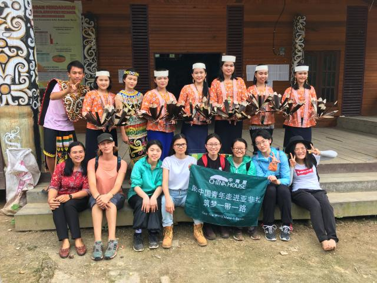
对于没有在传统文化环境中成长的孩子，所有知识的来源是老师和族里的老人。于是这些传统的故事口口相传，再一点一点扎根在孩子的心里，引领着他们成长为达雅人。
长老Bilung说，文化最终是会被改变的，他们会被时间所改变但也会被时间所修正，因为文化的本质是人。
离开Merasa村庄的时候，我想起中国的皮影戏、戏曲、古琴，还有很多渐渐淡出大众视野的传统文化宝藏。它们曾经也像达雅族的纹身一样深深地印刻在人们心里。不要让它们被淹没，我们应该带着一颗炙热的心去敬畏和传承中国的传统文化。
达雅族的传统文化从中国发源，但是由于时间、战争、以及部落迁移的原因，许多传统的达雅族习俗已经被改变，甚至永远被遗忘在了历史中。
达雅族和泰雅族的祖先都是大夏族，在这两个部落里有许多相似的习俗和文化。两个部落都信奉着一种鸟类，他们相信这种鸟能给他们带来好运，是智慧的象征。 他们都相信经过一种特殊的仪式（达雅族是在木屋中进行的仪式，泰雅族是彩虹桥），他们能够到达和见到他们所崇拜的地方和人。 这两个民族同样都有纹身的文化，在泰雅族，女性在结婚之前一定要纹身；在达雅族，男性在结婚前也会在后背纹身。从这里，我们看出达雅族和中国还是有着丝丝缕缕，不可切割的联系。
二十世纪是一个多难的世纪，印度尼西亚发生了许多战争和侵略。不幸始于1777年，荷兰的入侵带来了外来宗教，他们散播宗教迫使人们放弃了自己的传统信仰和文化，因为本地一些传统文化在外来宗教里是不被允许的，例如长耳垂，达雅独特纹身。 同时也一直因为政府边缘化加里曼丹岛及其文化，在往后的两百年内，本地传统文化从每一代人手中不断流失。尽管当地部落的文化长老也曾想再次复兴这些传统的属于达雅族的文化， 他说，现在的人们已经习惯了这现代化的生活，他们不敢再去尝试那些传统的东西，以至于那些传统文化如纹身现在已经变成了一种符号。
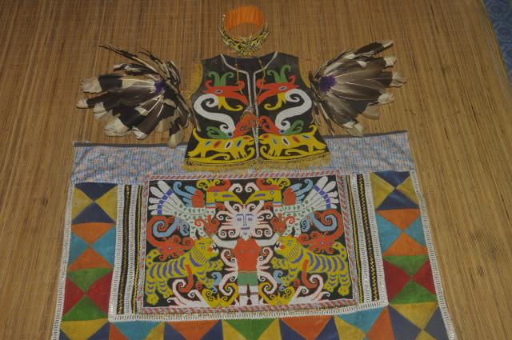
在达雅族，传统纹身代表着重要意义，并传递出相关信息，如是否结婚、是否足够勇敢以及在部落里的社会地位，所以每个传统的达雅族人都拥有自己的纹身。达雅族人一般会在14-15岁时开始纹身。 达雅族纹身的颜色是蓝黑色的，如果身上有带有颜色的纹身，那并不属于达雅族的传统纹身，他们通常会在举行祭祀仪式的时候洗去。取得族长的许可，举行祭祀仪式之后，便可以请当地有名望的纹身师开始纹身了。 从埋线到绘制，这个过程非常漫长，部分纹身通常会花费一个月的时间，如果绘制全身，甚至会花近半年到一年。
达雅族纹身中，不同的图案象征着不同的意义。普通达雅人都会将盔犀鸟、老虎和龙（蛇）作为纹身的图案，老虎、龙（蛇）是勇敢和权利的象征，而盔犀鸟在达雅人中心是自由的象征。 盔犀鸟对于达雅族最为特殊，在人们还没有猎捕盔犀鸟前，婆罗洲曾是盔犀鸟的天堂。盔犀鸟飞得比一般的鸟高和远，所以人们把它作为自由的象征。在达雅族传统民居里可以发现许多有盔犀鸟元素的服饰、装饰品甚至是舞蹈和音乐。
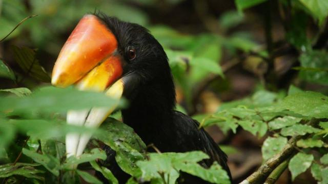
当地达雅人会十分乐意告诉你关于纹身的含义，但是只限于普通没有特殊意义的纹身。如果问起一些有特殊意义的如只有王室的人才可以纹的纹身，他们一般不会告诉你，因为普通的达雅人并不知道。 这种特殊的纹身所蕴含的意义，王室成员只会告诉自己的亲人。最为鲜为人知的两个图案分别是男性王室成员身上的茄子花和女性王室成员身上的达雅族女性头像。
从普通的老百姓到大臣和王室成员，不同社会阶级的达雅人纹身的部位都是不同的。对于男性来说，他们主要在这4个部位纹身，分别是左右胳膊和前后颈。一般纹的是花，这种叫Bunga Terong的花在中文里是茄子花的意思。 一般男性都先从右边开始纹，纹身数量越多代表他的等级越高。但是只有国王才会拥有四朵完整的花，因为只有国王才可以在后颈纹身。对于女性来说，也同样是这四个部位，左右臂膀和前后颈。 在地位等级高的女性身上，人们可以看到达雅族女性的头像。
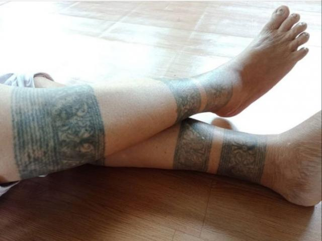
在每一个部落里都会有王室的人，对于这些王室的人也会有一些特殊的规定和要求，如果有人违反了还是会受到惩罚的。如果男女双方都是王室，他们所生的小孩不管是男还是女都有权力去绘制专属王室的纹身， 男生可以绘制那四个特殊的部位并带有茄子花，女生可以在脚上或手上绘制达雅族女性的头像。但是如果有一方不是王室，那么他们的子女都不可以做以上的绘制。但这样的社会阶级并不是不可打破的， 如果男性为部落做出了杰出贡献，如他们带领了族人们迁移到一个新的更有助于他们生存和发展的地方，那他就有资格去绘制茄子花。
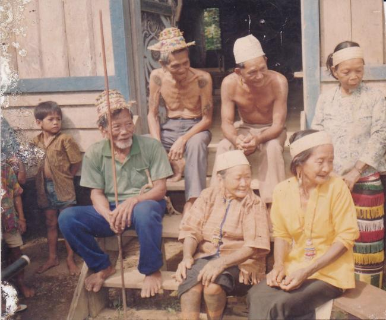
但可惜的是，在我前不久前往调研的东加里曼丹岛Merasa村庄，已经很少有人拥有传统的达雅族纹身，更别说王室纹身。村里的老人说，这个传统在1973年外国入侵的时候就已经消失了。
Merasa村庄生态旅游项目工作人员Linus说，文化逐渐改变，很多达雅年轻人不再想拥有纹身，因为他们不想与别人不一样。当地的小学老师Uci告诉我，政府为了执行禁止纹身的政策，甚至禁止有纹身的小孩上学。受到政府的影响，达雅人逐渐开始穿长衣长裤，遮盖他们的纹身印记。
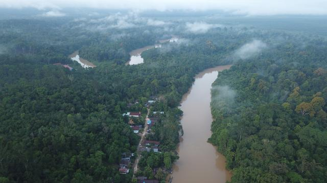
Uci外婆是村里为数不多还记得那段历史的老人，她的丈夫是当时王室的成员，也是一名纹身师。但当我见到Uci外婆的时候，她也穿着长衣长裤遮盖着腿上和手臂上的纹身，并且刻意回避我关于传统纹身的话题。Uci说，之前外婆十分愿意向别人展示自己的纹身， 但是现在她搬到了更繁华的县城里，于是她穿起长衣和长裤遮住了自己的纹身，因为她害怕纹身显露出来后，别人会用另类的眼光去看她。 在社会的压力下，她说服自己，拥有那些传统文化并不是一件值得骄傲的事情，现在的人们也不会理解传统文化。于是，她把自己身上独有的符号掩盖了起来，淹没在了人群里。
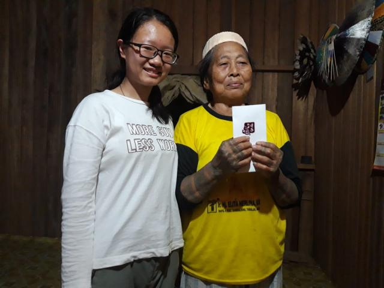
纹身是达雅族的文化象征，还有更多的文化随着社会的发展消失在历史的长河里。当我问起村庄里唯一一所中学的学生关于传统文化的内容时，孩子们茫然地看着我，仿佛这些文化和历史不曾出现在他们的村庄里。 当初带着第一批村民迁徙到Merasa村庄的长老Bilung说，政府政策的影响使得越来越多达雅人不想与别人不一样。达雅人渐渐习惯了现代化的生活方式，有的达雅人甚至把自己的当地名字改成了西式的名字。
四十年前，入侵者进入印度尼西亚后发现了纹身和长耳垂的达雅人。基督教中，纹身是不被允许的。印尼政府面对入侵者的威胁，同时也因为不够了解和认同达雅族的纹身文化，最终接受纹身是不好的东西。于是为了更好地推进社会的发展印尼政府发布了禁止纹身的政策。
1973年之前达雅人一直信奉崇拜祖先灵魂，而随着基督教的到来，他们逐渐地由信仰自己的神灵变成了信仰上帝，也开始忘记他们独有的文化包括传统纹身。
尽管很多达雅老人穿起长衣长裤掩盖着纹身，但是他们心中一直都存留着达雅文化。达雅族内也会有一些人愿意一直不停地告诉达雅孩子们关于达雅族的文化和传承文化的重要性。如果一个部落遗失掉了他们的特色文化，这个族群的灵魂和精神就遗失了。 就像Linus说的，文化的丢失导致许多达雅人并不知道如何成为一个达雅人。
这支从中国西南迁徙至加里曼丹岛的传统部落在融入现代生活的同时，正在尽力避免着传统的流逝。
在Merasa村庄里，越来越多的年轻人开始重新关注他们的传统文化，在学习英语的时候，也愿意学习部落的传统舞蹈和音乐；走进村民粉饰一新的居所，墙上仍展示着达雅族的“传家宝”-剑和盾；古老的丰收庆典也在年轻人的组织下，渐渐回到大众的视野，并且颇受喜爱。
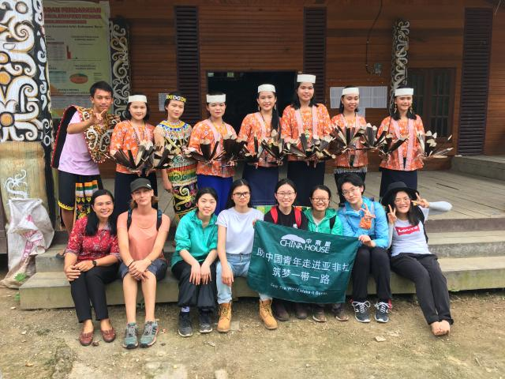
对于没有在传统文化环境中成长的孩子，所有知识的来源是老师和族里的老人。于是这些传统的故事口口相传，再一点一点扎根在孩子的心里，引领着他们成长为达雅人。
长老Bilung说，文化最终是会被改变的，他们会被时间所改变但也会被时间所修正，因为文化的本质是人。
离开Merasa村庄的时候，我想起中国的皮影戏、戏曲、古琴，还有很多渐渐淡出大众视野的传统文化宝藏。它们曾经也像达雅族的纹身一样深深地印刻在人们心里。不要让它们被淹没，我们应该带着一颗炙热的心去敬畏和传承中国的传统文化。
二氧化碳在我们大气中存在一定的危险量。我们见证了两极的冰融化，北极熊饥饿，蚊子线滑向北方等等。你是否意识到热带森林火灾是造成这种情况的主要原因呢?棕榈油产品的需求量巨大，在印尼已经成为了一个非常有利可图的行业。 棕榈油诱使当地人加入这场破坏热带雨林的竞赛，换取一小部分钱的回报。他们采取了一种廉价的方法，烧火来驱赶树木和灌木。大火吞噬了森林，毁坏了一切。并且向大气中释放出大量的二氧化碳。
加入婆罗洲嚷我们一起对抗这种痛苦!

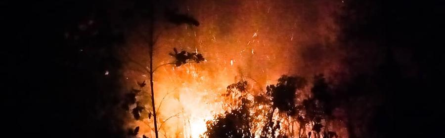
VNA报道，在苏门答腊岛上的六个省和婆罗洲岛上的加里曼丹省发生紧急情况后，印尼正在部署数千名军事和警察人员扑灭森林大火。 根据美国国家减灾局发言人阿格斯·维博沃（Agus Wibowo）的说法，截至7月31日，印尼的危险地区数量不断增加，其中发现了124起“严重”大火。 他说，政府已宣布廖内省，南苏门答腊省，西加里曼丹省，占碑省，南加里曼丹省和加里曼丹中部省这些有着非常易燃的泥炭地的地方已处于紧急状态,
当局已从军事，警察和地区减灾机构调遣了5679名人员到五省。
可以进行水弹灭火的飞机也正在进行部署。
VNA报道，在苏门答腊岛上的六个省和婆罗洲岛上的加里曼丹省发生紧急情况后，印尼正在部署数千名军事和警察人员扑灭森林大火。 根据美国国家减灾局发言人阿格斯·维博沃（Agus Wibowo）的说法，截至7月31日，印尼的危险地区数量不断增加，其中发现了124起“严重”大火。 他说，政府已宣布廖内省，南苏门答腊省，西加里曼丹省，占碑省，南加里曼丹省和加里曼丹中部省这些有着非常易燃的泥炭地的地方已处于紧急状态,
当局已从军事，警察和地区减灾机构调遣了5679名人员到五省。
可以进行水弹灭火的飞机也正在进行部署。

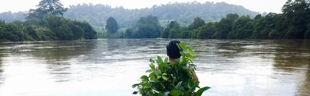
我们已经在这条河上看到了数千次，人们砍伐森林并挖出土壤来开采煤炭，然后将其从河流的上游带到下游，最后进入通往房屋的发电厂。 在这一条河上，我们带去种苗，在从河的下游到河的上游的再一次地播种，希望森林能够成为野生动植物的家园并为当地社区提供生计。 因为只有在土壤中还有煤的时候，这些矿井才能帮人们维持生活，一旦被开采殆尽，留给他们的就只有那些毫无用处的洞了。
播放视频
我们已经在这条河上看到了数千次，人们砍伐森林并挖出土壤来开采煤炭，然后将其从河流的上游带到下游，最后进入通往房屋的发电厂。 在这一条河上，我们带去种苗，在从河的下游到河的上游的再一次地播种，希望森林能够成为野生动植物的家园并为当地社区提供生计。 因为只有在土壤中还有煤的时候，这些矿井才能帮人们维持生活，一旦被开采殆尽，留给他们的就只有那些毫无用处的洞了。
播放视频
印度尼西亚加里曼丹岛，又称婆罗洲，是世界第三大岛，位于东南亚马来群岛中部，森林覆盖率达到80%。红毛猩猩（Orangutan，意为“森林人”）曾在这片土地上无忧无虑地生活着，它们的眼中，透露着欢乐与纯真。
那时，天空的蔚蓝映衬着岛屿的青绿，伴随着悦耳动听的犀鸟鸣叫，生意盎然。

但后来，一个黄色“新物种”在森林中出现，原有的宁静被彻底打破：随着棕榈油产业的扩张，印尼的热带雨林逐渐被黄色推土机夷为平地，又变成了种植园。“森林人”红毛猩猩就此失去了家园。
“当你从飞机上看加里曼丹岛时，你会觉得，天啊，好绿，这是一片美丽的森林。然而事实上，它们已变成大面积的棕榈树种植园。”理萨是印度尼西亚环保组织COP（红毛猩猩保护中心）的工作人员。 COP在英语中是警察的意思，在印尼，当地人对警察没有太多好印象。因而，COP有一句口号：this COP, not that COP。翻译过来就是“和那些糟糕的警察不同，我们是真正的森林警察。”

COP起源：哈迪与他的“猿猴十字军”
20世纪80年代中期，加里曼丹岛的森林面积相较20年前总体下降了25%，并以每年130万公顷的速度不断被破坏。大面积的森林被棕榈油业公司的挖掘机无情铲倒用以耕种棕榈油树。 棕榈油，听似陌生，但在食品领域，日用化工及其他许多工业领域都极其常见。随着全球对于棕榈油需求量的急剧上升，自1986年起，棕榈油业在印尼开始了快速扩张。

对于树木的砍伐使得印尼的生态受到了史无前例的冲击，野生动物的栖息地被无限缩小，许多物种的栖息地被威胁。被称为“森林人”的印尼国宝红毛猩猩就是最具代表的一员。 红毛猩猩是全球四大类人猿之一（大猩猩、黑猩猩、倭猩猩和红毛猩猩），是亚洲唯一的类人猿，它们只生活在苏门答腊和加里曼丹（印尼和马来西亚）。根据科学家研究，红毛猩猩与人类有97%的基因相似度，也就意味着， 它们和人类一样，能感觉到快乐、恐惧和爱。

失去家园和食物的红毛猩猩会被逼无奈进入棕榈树林寻找唯一的食物来源——棕榈树苗，而因此被棕榈油公司视为农田的“害虫”并进行捕杀。
广袤的棕榈油田中悄悄出现了大量红毛猩猩的尸体，它们有的被砍去了手臂，奄奄一息；有的被剁下了头颅，触目惊心；甚至还有的被员工放的十几条猎犬，活活撕咬致死。 从1986年到2016年，加里曼丹岛红毛猩猩的数量已下降了60%左右。

随着越来越多的红毛猩猩流离失所，印尼出现了不少救援中心拯救他们。
2015年，新闻记者出身的哈迪在一个大型红毛猩猩救援中心工作。看到一批又一批的红毛猩猩不断被送到这里，他产生了疑问：为什么我们只是救治，却不去了解和尝试解决背后的原因？当哈迪把这个想法告诉救援中心负责人，他得到了这样的回复：“那不是我们的职责。如果想这么做，你可以自己成立你的组织。”
于是，哈迪创建了COP（Center of Orangutan Protection），一个致力于与伤害红毛猩猩的根源斗争的印尼本土野生动物保护组织。 COP组织旗下主要为四大部门——Ape Crusader （人猿十字军），通过调查收集棕榈油公司伤害红毛猩猩的证据并加以曝光；Ape Warrior （人猿斗士），阻止非法红毛猩猩交易和普及红毛猩猩知识；Ape Defender（人猿守卫者），救援受伤的红毛猩猩；Ape Guardian（人猿监护者）负责重建森林以及所救助红毛猩猩的放归。
人猿十字军是COP的标志部门，也是他们区别于印尼许多不敢与体量巨大的棕榈油集团斗争的组织的最大特点。在国际上，所有的棕榈油公司都必须通过“棕榈油可持续发展圆桌会议”（RSPO）的审核，才能出口和售卖产品，人猿十字军收集的证据会影响棕榈油公司在RSPO的审批。 人猿十字军没有办公室，他们居无定所，永远在加里曼丹岛开着车到处奔波调查，栖息于残存的森林之中。森林，便是他们的战场。
COP战场：Linus和达雅克人的森林
2015年9月3日，加里曼丹岛的上空卷起了滚滚黑烟。据估计，这场大火焚烧了近209万公顷。火海掠过的每一片土地，都只留下了呛鼻的毒烟，碳化的植被与烧焦的动物。


COP加里曼丹岛的负责人里努斯，在这场大火中努力奋战，试图挽回森林。里努斯来自于加里曼丹岛西部一个贫穷的达雅克人村庄，因为过于贫困，自小到城里富人家给人做保姆，以此换取学费上学。条件并没有让他放弃上进，在陪富人小孩一遍一遍看英文动画片中，他自学了英语。“我对小熊维尼特别熟悉。”里努斯笑。特别刻苦努力的里努斯，后来加入了COP，从做饭杂工开始，逐渐成了加里曼丹岛分部的负责人。今年他才24岁。
由于达雅克族人的生活完全依赖森林，里努斯全家对于森林都有着独特的感情。在那场大火中，里努斯的家乡也烧起来了，里努斯却在加里曼丹岛的中部，忙于工作无法回家。担心家人的他打电话给家里，爷爷却说：“你不要回来，好好完成工作。我们家虽然被烧掉了，只要森林还在，人们就有希望。” 但几天之后，一则讯息深深刺痛了里努斯的内心； 因为奋力于救火第一线，他的爷爷在大火中去世了。这让里努斯一蹶不振，但或许是爷爷曾说过的话，让他最终走了出来。
受伤的红毛猩猩不断增加，许多野保组织已有的救援中心无法容纳下更多的红毛猩猩，2017年，里努斯在加里曼丹岛的东北部最后的森林地区开始搭建当地的第一个红毛猩猩救援中心。救援中心会治疗受伤的红毛猩猩宝宝，养大后运送它们去一个小岛进行模拟野外生存，再将它们放归自然。一穷二白的里努斯带领团队，亲力亲为搭建了这个救援中心。 每天，他背着沉重的木材走进森林，组建房屋。日复一日的高负荷工作，里努斯后来终于病倒了，腰椎出现了严重问题，导致不能行走。今天，他在加里曼丹岛西部养伤，已经卧床三个月了。
不过，救援中心的工作并没有因此停止。
COP传承：里萨与“世界上最小”的红毛猩猩救援中心
刚从人类学毕业的里萨接过了援救中心的火炬。里萨在大学里主要研究类人猿，并从那时开始关注红毛猩猩。当他发现红毛猩猩的独特性与现状，便有了保护红毛猩猩的想法，而COP正符合他的心意。“我看到大部分的野保组织都是白人为主。为什么很少有我们当地人去保护这些动物？这可是我们印度尼西亚的物种。”里萨还记得当年加入时的情怀。
里萨带领团队顺利完成救援中心的搭建，并一步步推动里努斯的理想。2017年底，救援中心预计能够进行历史上第一次救援中心红毛猩猩的放归。 不过，喜悦的背后，还蕴藏着许多的艰辛。据里萨讲，COP组织是唯一一个完全不接受棕榈油业公司资金的保护红毛猩猩的野保组织。“如果我们接受这些钱，我们将无法与这些公司斗争下去。”里萨说。因而，COP非常缺钱。
救援中心的搭建中，运输及搭建基本上都要靠人力。疲惫了，十几个成员挤在一块露天的木板平台上休息。在资金最不足的时候，COP有限的资金只够用来喂养红毛猩猩，工作人员的工资都无法保证。不稳定的工作让里萨的家人对他的工作表示担忧。“我都不敢跟父母说我月工资到底多少，否则他们一定会让我离开的。”里萨说。但为了让父母放心，里萨每个月会定期给家里寄钱。

像里萨这样的年轻人不断加入COP，让COP成为印尼平均年龄最底的野保组织之一。COP建立了COP学校，每年选拔，培训野保青年，带动更多青年人参与红毛猩猩保护。许多COP学校的毕业生，后来到加入了COP。“我们是印尼最小的红毛猩猩救援中心，不过没关系，我们的目标不是要收容很多的红毛猩猩，而是红毛猩猩再也不用来救援中心。”里萨说。

但后来，一个黄色“新物种”在森林中出现，原有的宁静被彻底打破：随着棕榈油产业的扩张，印尼的热带雨林逐渐被黄色推土机夷为平地，又变成了种植园。“森林人”红毛猩猩就此失去了家园。
“当你从飞机上看加里曼丹岛时，你会觉得，天啊，好绿，这是一片美丽的森林。然而事实上，它们已变成大面积的棕榈树种植园。”理萨是印度尼西亚环保组织COP（红毛猩猩保护中心）的工作人员。 COP在英语中是警察的意思，在印尼，当地人对警察没有太多好印象。因而，COP有一句口号：this COP, not that COP。翻译过来就是“和那些糟糕的警察不同，我们是真正的森林警察。”
20世纪80年代中期，加里曼丹岛的森林面积相较20年前总体下降了25%，并以每年130万公顷的速度不断被破坏。大面积的森林被棕榈油业公司的挖掘机无情铲倒用以耕种棕榈油树。 棕榈油，听似陌生，但在食品领域，日用化工及其他许多工业领域都极其常见。随着全球对于棕榈油需求量的急剧上升，自1986年起，棕榈油业在印尼开始了快速扩张。
对于树木的砍伐使得印尼的生态受到了史无前例的冲击，野生动物的栖息地被无限缩小，许多物种的栖息地被威胁。被称为“森林人”的印尼国宝红毛猩猩就是最具代表的一员。 红毛猩猩是全球四大类人猿之一（大猩猩、黑猩猩、倭猩猩和红毛猩猩），是亚洲唯一的类人猿，它们只生活在苏门答腊和加里曼丹（印尼和马来西亚）。根据科学家研究，红毛猩猩与人类有97%的基因相似度，也就意味着， 它们和人类一样，能感觉到快乐、恐惧和爱。
失去家园和食物的红毛猩猩会被逼无奈进入棕榈树林寻找唯一的食物来源——棕榈树苗，而因此被棕榈油公司视为农田的“害虫”并进行捕杀。
广袤的棕榈油田中悄悄出现了大量红毛猩猩的尸体，它们有的被砍去了手臂，奄奄一息；有的被剁下了头颅，触目惊心；甚至还有的被员工放的十几条猎犬，活活撕咬致死。 从1986年到2016年，加里曼丹岛红毛猩猩的数量已下降了60%左右。
随着越来越多的红毛猩猩流离失所，印尼出现了不少救援中心拯救他们。
2015年，新闻记者出身的哈迪在一个大型红毛猩猩救援中心工作。看到一批又一批的红毛猩猩不断被送到这里，他产生了疑问：为什么我们只是救治，却不去了解和尝试解决背后的原因？当哈迪把这个想法告诉救援中心负责人，他得到了这样的回复：“那不是我们的职责。如果想这么做，你可以自己成立你的组织。”
于是，哈迪创建了COP（Center of Orangutan Protection），一个致力于与伤害红毛猩猩的根源斗争的印尼本土野生动物保护组织。 COP组织旗下主要为四大部门——Ape Crusader （人猿十字军），通过调查收集棕榈油公司伤害红毛猩猩的证据并加以曝光；Ape Warrior （人猿斗士），阻止非法红毛猩猩交易和普及红毛猩猩知识；Ape Defender（人猿守卫者），救援受伤的红毛猩猩；Ape Guardian（人猿监护者）负责重建森林以及所救助红毛猩猩的放归。
人猿十字军是COP的标志部门，也是他们区别于印尼许多不敢与体量巨大的棕榈油集团斗争的组织的最大特点。在国际上，所有的棕榈油公司都必须通过“棕榈油可持续发展圆桌会议”（RSPO）的审核，才能出口和售卖产品，人猿十字军收集的证据会影响棕榈油公司在RSPO的审批。 人猿十字军没有办公室，他们居无定所，永远在加里曼丹岛开着车到处奔波调查，栖息于残存的森林之中。森林，便是他们的战场。
2015年9月3日，加里曼丹岛的上空卷起了滚滚黑烟。据估计，这场大火焚烧了近209万公顷。火海掠过的每一片土地，都只留下了呛鼻的毒烟，碳化的植被与烧焦的动物。
COP加里曼丹岛的负责人里努斯，在这场大火中努力奋战，试图挽回森林。里努斯来自于加里曼丹岛西部一个贫穷的达雅克人村庄，因为过于贫困，自小到城里富人家给人做保姆，以此换取学费上学。条件并没有让他放弃上进，在陪富人小孩一遍一遍看英文动画片中，他自学了英语。“我对小熊维尼特别熟悉。”里努斯笑。特别刻苦努力的里努斯，后来加入了COP，从做饭杂工开始，逐渐成了加里曼丹岛分部的负责人。今年他才24岁。
由于达雅克族人的生活完全依赖森林，里努斯全家对于森林都有着独特的感情。在那场大火中，里努斯的家乡也烧起来了，里努斯却在加里曼丹岛的中部，忙于工作无法回家。担心家人的他打电话给家里，爷爷却说：“你不要回来，好好完成工作。我们家虽然被烧掉了，只要森林还在，人们就有希望。” 但几天之后，一则讯息深深刺痛了里努斯的内心； 因为奋力于救火第一线，他的爷爷在大火中去世了。这让里努斯一蹶不振，但或许是爷爷曾说过的话，让他最终走了出来。
受伤的红毛猩猩不断增加，许多野保组织已有的救援中心无法容纳下更多的红毛猩猩，2017年，里努斯在加里曼丹岛的东北部最后的森林地区开始搭建当地的第一个红毛猩猩救援中心。救援中心会治疗受伤的红毛猩猩宝宝，养大后运送它们去一个小岛进行模拟野外生存，再将它们放归自然。一穷二白的里努斯带领团队，亲力亲为搭建了这个救援中心。 每天，他背着沉重的木材走进森林，组建房屋。日复一日的高负荷工作，里努斯后来终于病倒了，腰椎出现了严重问题，导致不能行走。今天，他在加里曼丹岛西部养伤，已经卧床三个月了。
不过，救援中心的工作并没有因此停止。
刚从人类学毕业的里萨接过了援救中心的火炬。里萨在大学里主要研究类人猿，并从那时开始关注红毛猩猩。当他发现红毛猩猩的独特性与现状，便有了保护红毛猩猩的想法，而COP正符合他的心意。“我看到大部分的野保组织都是白人为主。为什么很少有我们当地人去保护这些动物？这可是我们印度尼西亚的物种。”里萨还记得当年加入时的情怀。
里萨带领团队顺利完成救援中心的搭建，并一步步推动里努斯的理想。2017年底，救援中心预计能够进行历史上第一次救援中心红毛猩猩的放归。 不过，喜悦的背后，还蕴藏着许多的艰辛。据里萨讲，COP组织是唯一一个完全不接受棕榈油业公司资金的保护红毛猩猩的野保组织。“如果我们接受这些钱，我们将无法与这些公司斗争下去。”里萨说。因而，COP非常缺钱。
救援中心的搭建中，运输及搭建基本上都要靠人力。疲惫了，十几个成员挤在一块露天的木板平台上休息。在资金最不足的时候，COP有限的资金只够用来喂养红毛猩猩，工作人员的工资都无法保证。不稳定的工作让里萨的家人对他的工作表示担忧。“我都不敢跟父母说我月工资到底多少，否则他们一定会让我离开的。”里萨说。但为了让父母放心，里萨每个月会定期给家里寄钱。
像里萨这样的年轻人不断加入COP，让COP成为印尼平均年龄最底的野保组织之一。COP建立了COP学校，每年选拔，培训野保青年，带动更多青年人参与红毛猩猩保护。许多COP学校的毕业生，后来到加入了COP。“我们是印尼最小的红毛猩猩救援中心，不过没关系，我们的目标不是要收容很多的红毛猩猩，而是红毛猩猩再也不用来救援中心。”里萨说。